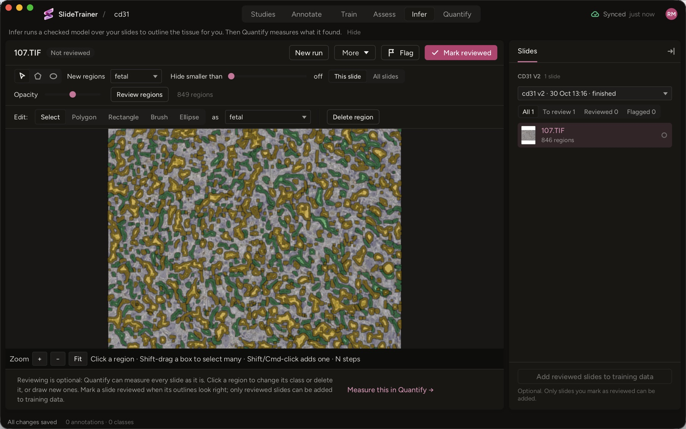
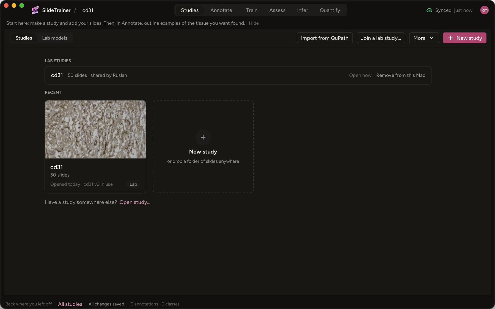
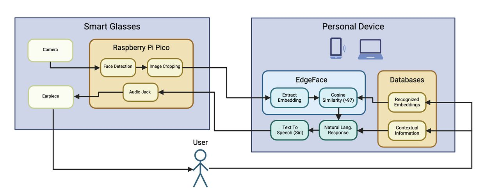

Hi, I'm Ruslan. I'm from the Toronto area in Canada, and I work at Tactus AI, where we're building humanoid robots[◉▂◉]s for labs. I like to learn and do new things.
Lets scientists who can't code train their own AI. Two labs use it for real studies.

Training a model usually takes someone who can code. So I built a desktop app where people label their own images, train a model and measure a whole study, all on their own computer.

Digital staining
Open-source digital staining models for academic labs with limited funding and resources. I'm building it now.
Screenshot 1
[what it stains, how it works and where it's at, in your words]
Screenshot 2
Screenshot 3
AI-Native Workspace
A desktop workspace for directing many AI agents across my projects. I'm building it now.
Screenshot 1
[why you're building it and what it does, in your words]
Screenshot 2
Screenshot 3
AI grant writer
Edits grant proposals based on expert critique. I'm building it now.
Screenshot 1
A review tool that checks grants and manuscripts against an expert's writing guidelines, built under contract with Kingston Health Sciences Centre. It combines rule-based checks with AI review (Python, FastAPI and the Claude API), and it's also used to teach resident researchers how to write strong papers and grants.
Screenshot 2
Screenshot 3
RecognEyes
Smart glasses that recognize faces for people with face blindness (prosopagnosia). Published at CUCAI 2025.

The glasses identify the person in front of you and say their name through an earpiece. Faces are detected on the glasses themselves (OpenCV on a Raspberry Pi), and recognition (TensorFlow) is over 99% accurate.
Built with the QMIND AI Design Team, 2024–2025 · Published at the Canadian Undergraduate Conference on Artificial Intelligence (CUCAI 2025), pages 194–199 · Read the paper ↗